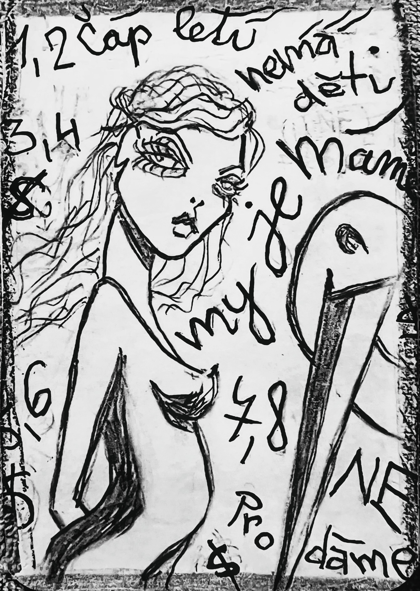

Zapsáno rukou, která nechtěla nic vysvětlit.
O ČÁPOVI
1, 2 čáp letí. 3, 4 nemá děti. 5, 6 my je máme. 7, 8 NEprodáme.
—
Jedna dvě – čáp letí.
Tři čtyři – nemá děti.
Pět šest – my je máme.
Sedm osm – NEprodáme.
—-
Tak začíná říkanka, kterou si šeptají děti v trávě, když se dívají na nebe. A čáp tam opravdu je. Letí vysoko, klidně, bez nákladu. Bez uzlíku. Bez cíle. Jen tak.
—
Kdysi dávno se říkalo, že čáp nosí děti. Že když přistane na komíně, někdo se narodí. Ale tenhle čáp nikdy nepřistál. Jen kroužil. A začalo se o něm šeptat, že je prázdný. Že zapomněl. Že je bezradný možná i vadný.
—-
Ale myš věděla, že to není pravda. Čáp nebyl prázdej. Plnej byl – jen ne toho, co by šlo vidět. Nesl nápady. Nesl možnosti. Nesl to, co se nestalo, ale mohlo.
—
A pak se objevily děti. Nečekaně. Bez vysvětlení. Bez čápa. Jen tak. V trávě. V koutě. V náručí těch, kteří je nečekali. A lidi se ptali: „Kde se vzaly?“
—--
myš odpověděla: „Pět šest – my je máme.“
—
Začali přicházet kupci. S penězi, s smlouvami, s nabídkami. Chtěli si děti odnést. Chtěli je vlastnit. Ale myš jen zavrtěla hlavou.
—
„Sedm osm – NEprodáme.“
—
Protože některé věci nejdou koupit. Některé věci přicházejí samy. A některé věci nejsou na prodej. Něco se nedá vlastnit.
—
Čáp mezitím letěl dál. A v tom začal si zpívat. Ale ne jednohlasně, druhý hlas ten jeho stín zpíval s ním.. Když přeletěl nad polem, tráva se na chvíli načechrala. Když přeletěl nad vesnicí, děti se přestaly hádat. Když přeletěl nad řekou, ryby přestaly jen pokukovat a ploutvemi rovnaly vodní kruhy. protože voda se malem rozestoupila, jako by čekala, co nikdy nepřijde.
—
A pak jednoho dne přistál. Ne na komíně. Ale na prázdném poli. Tam, kde minule hořelo. Jak tam zaječice proskočila plamenama. Tam, se vždy dějou různé věci. Které přesto nikdo nečeká.
—
A ostatní se tam sešli. Myš, kocour, zaječice, lemur, slon. Všichni, ti kdo věděli, že svět není jenom to, co se dá spočítat. A čáp se jich neptal. Jen rozprostřel křídla a z nich vypadly věty. Nedokončené. Neprodané. Nepřijaté. A děti si je začaly sbírat. Skládaly si z nich vlastní pohádky. vlastní jména. Vlastní smysly.
—
A to znamena, že čáp, který nic nenosí, je ten, který nese všechno. Akorát ne to, co jsme čekali.